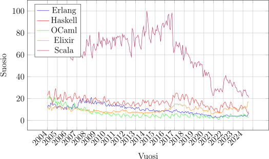
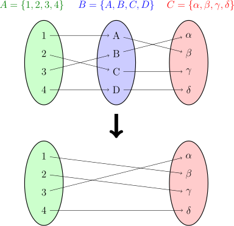
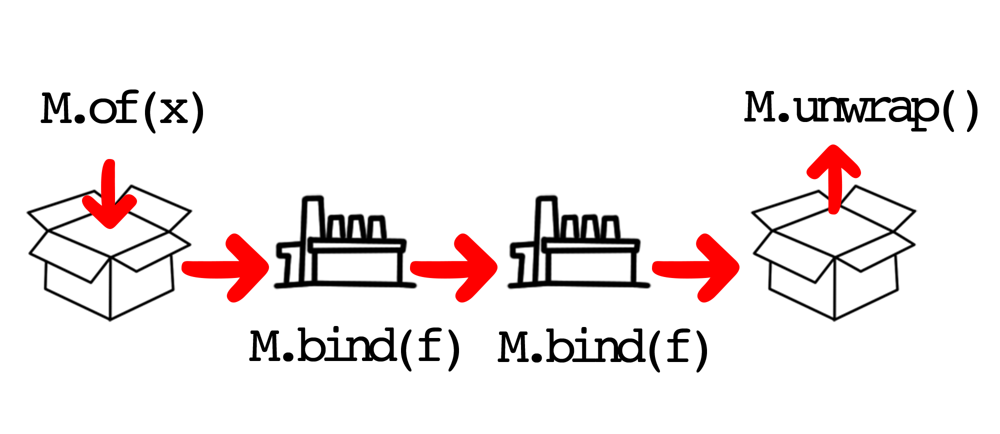

Pragmaattisen funktionaalisen
ohjelmoinnin arviointi
Insinööri (AMK)
Tieto- ja viestintätekniikka
Ohjelmistotuotanto
Insinöörityö
Ohjaaja: FM Simo Silander
Metropolia Ammattikorkeakoulu
18.11.2024
Pysyvä osoite: https://urn.fi/URN:NBN:fi:amk-2024111828665
Funktionaalista ohjelmointia tukee vahva teoreettinen
tausta, ja sen käytännön toteutus eroaa olennaisesti muista
ohjelmointiparadigmoista.
Tässä insinöörityössä tarkastellaan, miten funktionaalisen
ohjelmoinnin periaatteita voidaan pragmaattisesti sisällyttää
ohjelmistoprojekteihin.
Käydään läpi, miten ohjelmistoympäristöön voidaan
tuoda funktionaalisen ohjelmoinnin kieliagnostisia piirteitä, jotka
eivät ole sidoksissa
käytettävään ohjelmointikieleen. Koodiesimerkit, näkemykset
ja perustelut pohjautuvat kokemukseen ohjelmistoyrityksessä sekä
julkisiin lähteisiin,
joissa käsitellään funktionaalisen ohjelmoinnin, kategoriateorian,
ongelmien mallintamisen ja ohjelmoinnin periaatteita.
Tuloksena perustellaan funktionaalisen ohjelmoinnin käyttöä ohjelmien oikeellisuuden ja ylläpidettävyyden parantamiseksi. Näytetään, miten ohjelmat voidaan estää valehtelemasta ja miten operaatioita voidaan ketjuttaa funktioiden ja monadien avulla. Funktionaalista ohjelmointia voidaan liittää muihin ohjelmointiparadigmoihin, kunhan huolehditaan ohjelmiston monimutkaisuuden hallinnasta. Ohjelmoijat lähtökohtaisesti ajattelevat ongelmia ja ratkaisuja sen ohjelmointikielen näkökulmasta, jota he käyttävät.
Lisenssi
Creative Commons Attribution 4.0 International (CC BY 4.0)
Voit vapaasti:
Seuraavilla ehdoilla:
Insinöörityössä tutkitaan funktionaalisen ohjelmoinnin käytänteitä sellaisissa ohjelmointikielissä, joissa funktionaalinen ohjelmointi ei ole ollut kielen luonnin peruste. Etsitään pragmaattista, tavoitelähtöistä puolta funktionaalisesta ohjelmoinnista, jossa teoriaa ei painoteta ilman selkeitä ja perusteltuja syitä. Funktionaalinen ohjelmointi on erittäin teoreettista ja akateemista lähtökohdiltaan.
Kokemusten ja median tarkkailun perusteella on huomattu funktionaalisten periaatteiden yhdistyvän yleiseen näkemykseen siitä, mitä ohjelmoinnin tulisi olla. Funktionaalinen ohjelmointi ei ole kuitenkaan noussut valtavirran suosioon. Insinöörityön tavoitteena on etsiä toimintaperiaatteita funktionaalisen ohjelmoinnin tuontiin mukaan arkiseen ohjelmointiin ilman pakonomaista teoriaa. Insinöörityössä kuitenkin etsitään funktionaalisen ohjelmoinnin teoriasta niitä osia, joilla voitaisiin kasvattaa funktionaalisen ohjelmoinnin pragmaattista mukaanottoa.
Insinöörityössä tutkitaan funktionaalisen ohjelmoinnin teoriaa hieman tavanomaisesta poikkeavasta näkökulmasta, jossa ohjelmat ajatellaan joukko-opin näkökulmasta olevan siirtymiä joukoista toisiin. Ei paneuduta kaikkiin käsitteisiin, joita tavanomaisesti tarkastellaan funktionaalisen ohjelmoinnin arvioinnin yhteydessä. Etsitään empiirisiä anekdootteja tunnettujen ohjelmistokehittäjien töistä, ja kokemuksista työympäristössä. Haastatellaan lyhyesti entistä Google-kehittäjää, joka puoltaa ohjelmointikielen omien ominaisuuksien käyttämistä.
Insinöörityön koodiesimerkeissä käytetään TypeScriptiä ja JavaScriptiä. Vaikka kaikki validi JavaScript-koodi on validia TypeScript-koodia (4), niin kielten nimiä käytetään työssä tilanteeseen sopien. Kirjoitetaan TypeScriptistä, kun sen tarjoamat tyypit JavaScriptin päälle ovat tilanteeseen nähden merkittäviä. Toisaalta kirjoitetaan JavaScriptistä, kun tyypit eivät ole esimerkille merkittäviä. Muuten pyritään pitämään käsitellyt asiat sellaisina, että niitä voisi hyödyntää myös muissa ei-funktionaalisissa ohjelmointikielissä.
Ei ole yksiselitteistä, mitä funktionaalisen ohjelmoinnin tulisi olla ja miten sitä tulisi käyttää. Matemaatikot vannovat funktionaalisen ohjelmoinnin oikeellisuuden nimeen, ja pragmaatikot kauhistuvat. Kuuluisan ristiriitaiset ja mutkikkaat keskustelut hämärtävät pohjaa, minkä päälle funktionaalinen ohjelmointi on rakennettu. (67; 69; 57; 20)
Funktionaalisen ohjelmoinnin hyötyjä on usein sanottu löytyvän suurelta osin vain matemaattisissa tai datapainotteisissa ohjelmissa (16, 10). Ajatus on haastettavissa.
Ensimmäisenä huomiona on se, että suuri osa ohjelmista on juuri datapainoitteisia (29). Tietokannassa on dataa, jota näytetään käyttöliittymässä. Samaan aikaan kerätään lisää dataa, jota näytetään toisissa käyttöliittymissä; toisin sanoen varsin datapainoitteista.
Toisena huomiona on se, että kaikki ongelmat voidaan mallintaa matemaattisesti. Funktionaalisen ohjelmoinnin Turing-vahva lambda-kalkyyli-pohja määritelmällisesti mahdollistaa sen, että funktionaalisessa ohjelmoinnissa voi toteuttaa kaiken saman kuin olio-ohjelmoinnissa (71; 21).
Ongelmien mallintaminen matemaattisesti ei kuitenkaan ole helppoa. Mallintaminen tuntuu vaativan vahvoja tyyppijärjestelmiä mallinnuksen järkevästi todistamiseksi.
Kuitenkin pikkuhiljaa funktionaalista ohjelmointia aletaan kutsumaan ilmiselväksi reitiksi ohjelmoida, ja esimerkiksi olio-ohjelmointia ylivertaisemmaksi (58, 1). Jopa Robert C. Martin, tunnettu ohjelmointikäytäntöjen asiantuntija ja olio-ohjelmoinnin puolestapuhuja, on siirtynyt merkittävästi funktionaalisen ohjelmoinnin suuntaan (44; 43). Lienee tarpeen selvittää, miten funktionaalisuutta saataisiin enemmän osaksi nykyohjelmoijan työkalupakkia.
Tiukasti funktionaaliseen ohjelmointiin tarkoitetut kielet eivät tunnu saavan nostetta päästäkseen yleiseen suosioon (kuva 1). Ero siirtyessä olio-ohjelmoinnista tai imperatiivisesta ohjelmoinnista funktionaaliseen ohjelmointiin voi olla kuin yöllä ja päivällä. Siksi funktionaalisen ohjelmoinnin keinoja ripotellaan osaksi suosittuja ohjelmointikieliä, että saataisiin vietyä todettuja parhaita funktionaalisen ohjelmoinnin paloja myös muihin paradigmoihin. Kenties ajatellaan niin, että varpaat on ensin kasteltava, ennen kuin voi hypätä syvään päätyyn.

Ripottelun voi havaita esimerkiksi, kun vahvasti olio-ohjelmointiin sovellettua Javaa on tuotu kohti funktionaalista pelikenttää erilaisin kielen työkalujen, kuten lambdafunktioiden ja Stream-API:n metodien yhdistämisen avulla (60; 59). Javaa voikin nykyään jo kutsua hybridiksi ohjelmointikieleksi funktionaalisen ja olio-ohjelmoinnin välillä (70, 50).
Myös JavaScriptissä Array-metodit, kuten Array.prototype.map (46),
Array.prototype.filter (45) ja Array.prototype.reduce (47), ovat
vakiintuneet keskeisiksi työkaluiksi (75; 79). Kyseiset funktiot ovat laajalti
käytössä funktionaalisessa ohjelmoinnissa. Myös JavaScript Set
-tietorakenne (joukko) on juuri saamassa joukko-opille ja funktionaaliselle
ohjelmoinnille olennaisia metodeja kuten Set.prototype.union (50) ja
Set.prototype.difference (49), jotka palauttavat uusia Set-tietorakenteita
(joukkoja) aiempien muokkaamisen sijaan funktionaaliselle ohjelmoinnille
ominaisesti (51).
Myös kirjoitushetkellä tason 3 TC39-ominaisuusesitys JavaScript iteraattorien apumetodeille vahvistaa funktionaalista tapaa ohjelmoida (73). Näiden metodien lisääminen mahdollistaa vielä johdonmukaisemman funktionaalisen koodin kirjoittamista.
Tehtäessä työtä osana Hoxhunt Oy:n tuotekehitystiimiä on saatu kokemusta funktionaalisesta ohjelmoinnista. Kokemuspohjaista tietoa on kerätty tiimiläisiltä sekä muuten omalta osalta. On nähty, kuinka funktionaalisen ohjelmoinnin käytänteitä käytetään, siten, että ensin niiden käyttöön on kannustettu, ja toisin pyritty estämään. Koodikatselmuksissa ja muissa keskusteluissa on usein kuultu ajatuksia kärkkäästi niin funktionaalisen ohjelmoinnin puolesta kuin vastaankin.
Funktionaalisen ohjelmoinnin kulmakivi on sen matemaattinen perusta (21; 71). Toisinaan funktionaalista ohjelmointia on mielletty vain älykkyyden todistamiseksi, ja jota humoristisesti ajatellaan vain matematiikan maisterin tutkinnon suorittaneiden taitavan. Voi olla vaikea nähdä funktionaalisen ohjelmoinnin hyötyjä, jos kokee sen vain ylimääräisenä monimutkaisuutena.
Funktionaalisen koodin kääntöpuoli on sen selittävyys: deklaratiivisuus. Jos on nähty funktionaalisen ohjelmoinnin tuntemattomuuden tai havaitun monimutkaisuuden läpi, niin on huomattu, että funktionaalista ohjelmakoodia voi parhaimmillaan lukea kuin selkeää englannin kieltä. Tämä johtuu siitä, että funktionaalinen ohjelmakoodi on perusteiltaan (deklaratiivista ohjelmakoodia) suorien käskyjen sijaan (imperatiivinen ohjelmakoodi) (78).
Yhdistetyt funktiot, joissa funktioita suoritetaan toinen toisensa jälkeen, ja annetaan aina edellisen paluuarvo seuraavan syötteeksi, kertoo suoraan, mitä siinä tapahtuu. Koodi dokumentoi itse itseään, kun kaikki ohjelman vaiheet ovat selkeästi nimetyissä palikoissa; erillisiä kommentteja ei koodiin tarvitse edes lisätä (koodiesimerkki 2.1).
const congratulateUsers = pipe( filter(isActiveUser), filter(isBirthdayToday), map(createCongratulationMessage), sendCongratulations ) // Onnitellaan kaikkia asiakkaita, joilla on tänään syntymäpäivä! congratulateUsers(users)
Toisaalta koodin deklaratiivisuuden ylistämisellä voi yrittää peittää muita ongelmia. Jos sokeana seuraa sääntöjä ja käytänteitä, voi jäädä muuten tärkeitä osa-alueita huomioimatta (80). Jos pyrkii liiallisesti luettavuuteen deklaratiivisella koodilla, voi esimerkiksi ohjelman tehokkuus kärsiä.
Luettavuus, tehokkuus ja ylläpidettävyys ovat kolme keskeistä osa-aluetta, joita on painotettu eniten työpaikalla käydyissä keskusteluissa, kun arvioidaan funktionaalisen ohjelmointitavan laajempia hyötyjä. Nämä osa-alueet näkyvät merkittävinä myös muiden ohjelmointityylien arvioinnissa. Luettavuutta pidetään yleensä kaikkein tärkeimpänä. Ohjelmakoodin ei tarvitse olla tehokasta ennen kuin optimointia todella tarvitaan (14), ja ylläpidettävyyden perusta on vahvasti sidoksissa siihen, kuinka luettavaa koodi on.
Tässä insinöörityössä tutkitaan, mitä tapahtuu, kun funktionaalista ohjelmointia ripotellaan proseduraaliseen ohjelmakoodiin. Tätä tarkastellaan sellaisen ohjelmointikielen näkökulmasta, jota ei ole suunniteltu erityisesti funktionaaliseen ohjelmointiin, mutta jossa se on kuitenkin mahdollista. Täksi ohjelmointikieleksi valikoitui JavaScript (ja TypeScript). Ohjelmointikieli valittiin aiemman osaamisen ja kokemusten perusteella, ja toisaalta myös siksi, että kieli on yksi markkinoiden käytetyimpiä, ja siten myös yksi olennaisimmista (62). JavaScript on myös kielenä siitä mielenkiintoinen, että se mahdollistaa koodiabstraktioiden luomisen ilman suurta vaivaa ohjelmoijalta. Hätiköidyt abstraktiot johtavat epäjohdonmukaisuuteen ja lopulta uudelleenkäyttämättömyyteen (24). Tämä tekee JavaScriptista haastavan, mutta antoisan kielen tutkia pragmaattista funktionaalisen ohjelmoinnin ripottelua.
Insinöörityössä käsiteltäviä asioita pyritään perkaamaan kieliagnostisesti, jolloin saadut tiedot ja taidot olisivat oleellisia myös kehittäjille, jotka eivät käytä TypeScriptiä tai JavaScriptiä.
Tarkoituksena on löytää tasapaino sille, miten funktionaalinen ohjelmointi kannattaa ottaa mukaan ohjelmistoprojektiin. Pohjalla on ajatus, että paras tapa olisi vain siirtyä kokonaan funktionaalisiin ohjelmointikieliin hybridikielten sijasta. Tätä ajatusta pyritään kumoamaan, sillä toivotaan, että funktionaalisuus voisi toimia myös kevyemmin osana ohjelmoijan arkea.
Kun jotain ei vaadita, se jää usein tekemättä tai ainakin puutteelliseksi. Siksi voi olla haastavaa ohjelmoida pragmaattista funktionaalista koodia JavaScriptissä. Kielessä, jossa juuri mitään sääntöjä ei pohjimmiltaan ole.
Jotta voidaan löytää pragmaattinen näkökulma funktionaaliseen ohjelmointiin, on käsiteltävä funktionaalisen ohjelmoinnin teoreettisia perusteita ja keskeisiä käsitteitä.
Tarkastellaan joukko-opin sovelluksia ohjelmoinnissa käytännön tasolla. Sivutaan kategoriateorian osuutta funktionaalisessa ohjelmoinnissa ilman syvällistä paneutumista yksityiskohtiin. Sivutaan myös kategoriateoriaa, joka on funktionaalisen ohjelmoinnin teoreettisen taustan kulmakivi. Tarkemmin käydään läpi kategoriateorian monadi-rakennetta, ja sen toimintaa.
Tutkitaan, miten nämä käsitteet integroituvat moderniin ohjelmistokehitykseen, kuten TypeScriptin käyttöön.
On tärkeää huomata, että tämän insinöörityön tavoitteena ei ole tarjota kattavaa opasta kaikkeen funktionaaliseen ohjelmointiin, vaan keskittyä valittuihin aihealueisiin, jotka tukevat työn pääteemoja ja osoittavat, miten teoreettiset käsitteet voidaan soveltaa käytännön ohjelmointihaasteisiin.
Valitut aihealueet pyritään avaamaan kieliagnostisesti, mutta kuitenkin JavaScript- sekä TypeScript-ekosysteemien näkökulmasta.
Lopulta näillä tiedoilla voidaan näyttää, miten funktionaalisen ohjelmoinnin käytänteet näkyvät hyödyllisesti (tai haitallisesti) ei-funktionaalisissa ohjelmistoprojekteissa.
Teoriaosuudessa pyritään pitämään sisältö mielenkiintoisena liimaamalla käsitteet yhdeksi kokonaisuudeksi. Teoriaan pyritään tuomaan konkretiaa erilaisilla esimerkeillä ja anekdooteilla.
Funktionaalinen ohjelmointi on ohjelmointiparadigma, jonka juuret ulottuvat 1930-luvulle ja lambda-kalkyylin kehitykseen. Lähestymistapa korostaa funktioiden käyttöä perusyksikköinä ja pyrkii välttämään muuttuvia tiloja (mutability) sekä sivuvaikutuksia (side-effects). Funktionaalisen ohjelmoinnin keskeisiä käsitteitä ovat puhtaat funktiot, korkeamman asteen funktiot, yhdistetyt funktiot sekä deklaratiivinen ohjelmointi. Funktiot ovat funktionaalisessa ohjelmoinnissa tosiaankin keskiössä. (71; 21)
Ohjelmoidessa funktionaalista ohjelmakoodia nimeämiskäytänteet ovat yhtä vaikeita kuin aina ennenkin. Tässä insinöörityössä käytetään Haskell-ohjelmoijien keskuudessa näkyviä nimeämiskäytänteitä, joissa käytetään lyhyitä ja “intuitiivisia” nimiä funktioille ja muuttujille. Esimerkiksi:
Esimerkkejä käytänteiden käytöstä:
const map = f => xs => xs.map(f) const either = f => g => x => f(x) || g(x) const max = x => y => x > y ? x : y const pipe = fs => x => fs.reduce((acc, f) => f(acc), x)
map ottaa ensin yhden
funktion (f), ja tämän jälkeen monta arvoa (xs). Pipe ottaa ensin monta
funktiota (fs), ja tämän jälkeen yhden arvon (x).Funktionaalisessa ohjelmoinnissa puhtaat funktiot ovat funktioita, jotka poikkeuksetta aina palauttavat samalle syötteelle saman arvon. Funktion puhtauden voi päätellä siitä, jos sen voisi teoreettisesti korvata hakutaulukolla. (28)
Puhtaista funktioista hyötyy siten, että niitä voi käyttää uudelleen ja uudelleen kontekstista riippumatta. Puhtailla funktioilla voi rakentaa järjestelmäriippumattomia kirjastoja.
Puhtaiden funktioiden perusta on matematiikassa. Jos matemaattinen funktio esimerkiksi ei aina palauttaisi samalle arvolle samaa palautusarvoa, mitä hyötyä funktiosta edes olisi? Toivottavasti tulee aina olemaan .
Funktionaalinen ohjelmointi mahdollistaa koodin uudelleenkäytettävyyden. Lambda-kalkyylin perustein joka ikisien ongelman voi purkaa pieniksi funktioiksi (11). Lambda-kalkyylistä johdetut kombinaattorit voi ottaa osaksi ohjelmoijan työkalupakkia missä tahansa ohjelmointikielessä, joka kohtelee funktioita samalla tavalla kuin muuttujia (first-class citizen) (koodiesimerkki 3.2).
Jos kombinaattoreille haluaa etsiä vastaavanlaista määritelmää olio-ohjelmoinnin termeistä, voisi niitä ajatella olevan perustavanlaatuisia suunittelumalleja.
Kombinaattori compose on tapa tehdä yhdistettyjä funktioita, joista
kerrotaan enemmän seuraavassa luvussa.
const identity = x => x const constant = x => y => x const apply = f => x => f (x) const thrush = x => f => f (x) const duplication = f => x => f (x) (x) const flip = f => y => x => f (x) (y) const compose = f => g => x => f (g (x)) const substitution = f => g => x => f (x) (g (x))
Kombinaattorit näyttävät uhkaavilta, ja raa’assa muodossaan niiden hyötyarvoa voi olla hankala havaita. Niiden käyttämistä voi kuitenkin perustella niiden perustavanlaatuisten ja kieliagnostisien ominaisuuksien takia. Ohjelmoidessa funktionaalisesti ei kombinaattoreita kuitenkaan tarvitse paljoa ajatella. Niitä tulee kirjoittamaan varmasti vähintään vahingossa, sillä niitä vaaditaan funktioita pyörittäessä (77). Kuitenkin on hyvä tiedostaa käytössä olevat rakennuspalikat, ja millä nimellä etsiä niistä tietoa tarvittaessa.
Usein funktionaalista ohjelmointia mainostaessa puhutaan funktioiden puhtauden ja datan muuttumattomuuden olevan paradigman oleellisinta. Kuitenkin samaan aikaan juuri datan muuttumattomuus ja tilattomuus koetaan paradigman suureksi kompastuskiveksi (16; 18; 75).
On tärkeää huomata, että kaiken ei tarvitse olla täysin puhdasta ja muuttumatonta, kunhan ne osat, joissa funktionaalista ohjelmointia hyödynnetään, pysyvät ennustettavina ja hallittavina.
Yhdistetyt funktiot ovat loistava tapa kirjoittaa selkeää ja modulaarista koodia. Parasta on, että kaiken ei tarvitse olla pelkkiä funktioita: voi hyvin kirjoittaa myös olio-ohjelmointityylillä ja silti hyödyntää yhdistettyjä funktioita logiikan selkeyttämiseksi ja yksinkertaistamiseksi.
Loppujen lopuksi funktionaalisen ohjelmoinnin perusta on funktioissa ja niiden yhdistämisessä. Datan muuttumattomuus ja sivuvaikutuksettomuus on vain esivaatimus funktioiden ennustettavuudelle.
Yhdistetty funktio tarkoittaa yksinkertaisesti kahden, tai useamman, funktion yhdistämistä siten, että yhden funktion tulos syötetään seuraavalle. Esimerkiksi koodiesimerkin 3.3 funktio on funktioiden ja yhdiste. Ajaessa funktio , suoritetaan ensin , jonka palautusarvo annetaan funktiolle . Kaksi funktiota yhdistämällä on saatu yksi uusi funktio.
const f = x => 2 * x const g = x => x + 3 const h = x => f(g(x))
Funktionaalisissa ohjelmointikielissä yhdistettyjä funktioita pystyy usein kirjoittamaan käyttäen kieleen sisäänrakennettuja operaattoreja, joilla funktioiden yhdistäminen on helppoa ja suoraan osana ohjelmointikieltä (84; 36). JavaScriptissä ei ole vastaavanlaista sisäänrakennettua operaattoria. (Vaikkakin sellainen on ollut kehitteillä (72).) Operaattorin voi kuitenkin kirjoittaa funktiona helposti osaksi mitä tahansa koodikantaa (koodiesimerkki 3.4).
const pipe = f => g => x => g(f(x)) const compose = f => g => x => f(g(x)) const h = pipe(f)(g) // tai vaihtoehtoisesti const h = compose(g)(f)
Voi olla mielenkiinoista huomata, että koodiesimerkin compose löytyy
myös koodiesimerkin 3.2 tunnetuista yleisistä kombinaattoreista.
Koodiesimerkissä 3.4 on näytettynä kaksi eri tapaa yhdistää funktioita:
pipe ja compose. Käytännössä tapojen ainoa ero on se, kummasta
suunnasta funktiot suoritetaan. compose on lähempänä yhdistettyjen
funktioiden matemaattisia perusteita, kun taas pipe on usein helpompi lukea,
sillä se suoritetaan yleisessä lukemissuunnassa, eli vasemmalta oikealle, tai
ylhäältä alas. (23)
Tulevissa koodiesimerkeissä tullaan suosimaan funktioiden yhdistämistä
käyttäen pipe-funktiota compose-funktion sijasta.
Esimerkin 3.4 pipe ja compose toimivat vain kahdelle funktiolle kerrallaan.
Tämä tapa seuraa lambda-kalkyyliä (21). Ohjelmointikielen mukaan voi
kuitenkin olla mieluisaa kirjoittaa funktiot niin, että ne tukevat suoraan
mielivaltaista määrää funktioita.
JavaScriptissä näin voi tehdä esimerkiksi hyödyntämällä Array-tietorakennetta (koodiesimerkki 3.5).
const pipe = fs => x => fs.reduce((acc, f) => f(acc), x) const compose = fs => x => fs.reduceRight((acc, f) => f(acc), x) const f = x => x + 1 const g = x => x * 2 const h = x => x - 3 const i = pipe([f, g, h]) i(5) // (((5 + 1) * 2) - 3) = 9 // tai vaihtoehtoisesti const i = compose([h, g, f]) i(5) // (((5 + 1) * 2) - 3) = 9
reduce ja reduceRight funktioita. Nämä versiot voivat ottaa
mielivaltaisen määrän funktioita argumenttina.Mikä tästä sitten tekee loistavaa? Se, että ohjelmointi on kerrankin oikeasti kuin LEGO-palikoilla leikkimistä (koodiesimerkki 3.6).
const pipe = fs => x => fs.reduce((acc, func) => func(acc), x) const multiply = x => y => x * y const add = x => y => x + y const filter = f => xs => xs.filter(f) const map = f => xs => xs.map(f) const isEven = x => x % 2 === 0 const rejectOdds = filter(isEven) const multiplyBy10 = multiply(10) const pipeline = pipe([rejectOdds, map(multiplyBy10)]) pipeline([1, 2, 3, 4]) // [20, 40]
Esimerkissä näytetyt funktiot ovat hyvin yksinkertaisia. Kuitenkin ne ovat täysin uudelleenkäytettäviä. Jos totuttautuu käyttämään joitain funktioita kaikissa projekteissa, voi huomata koodin kirjoittamisen tehokkuuden ja johdonmukaisuuden kasvavan.
Tämä osa pyrkii kirjoittamaan matemaattisista käsitteistä käytännönläheisesti ja mahdollisesti suuresti yksinkertaistaen. Ajatuksena on, että ylemmän tason ajattelumalli välittyisi tekstissä tarkkojen määritelmien sijasta.
Joukko-oppi on matematiikan haara, joka tutkii joukkojen ominaisuuksia ja niiden välisiä suhteita. Ohjelmoinnissa joukko-oppi ilmenee yksinkertaisimmin joukkotietorakenteiden kautta, jotka mahdollistavat uniikkien alkioiden käsittelyn tehokkaasti ja ilmaisuvoimaisesti (52; 51). On myös luotu ohjelmointikieli, joka perustuu kokonaan joukko-oppiin (42).
Tyyppiteoria puolestaan on matematiikan haara, joka tutkii arvojen luokittelua, ja miten niitä käsitellään ohjelmoinnissa ja logiikassa (83; 41).
Tyyppien ja joukkojen semanttinen ero on nyanssinen (66). Ohjelmoinnissa puhutaan usein tyypeistä. Insinööriopintojen matematiikassa joukot ovat olleet vahvasti läsnä. Tässä luvussa pääajatuksena on miettiä, kuinka asiat muutetaan funktioilla toisiksi, asiat voi mieltää kuuluvan joukkoihin tai tyyppeihin, kumpaa nyt ymmärtää paremmin. Oikea määritelmä saattaa lähestyä kategoriateoriaa, mutta erottaminen ei liene olevan tällä tasolla relevanttia.
Ihmisillä on kuitenkin kyky hahmottaa asioita joukkoina (tai tyyppeinä). Koko maailman voi mallintaa niillä (kuva 2) (41).
Koska koko maailman voi mallintaa joukkoina (tai tyyppeinä), voidaan niillä mallintaa myös ohjelmia.
Ohjelmoinnissa joukkotietorakennetta käytetään hyvin laajasti, ja sen merkitys on keskeinen monissa ohjelmointikielissä, kuten Pythonissa, Javassa ja JavaScriptissä. Joukkotietorakenne mahdollistaa alkioiden tallentamisen ilman duplikaatteja. Sen operaatiot, kuten unioni, leikkaus ja erotus, ovat suoraan peräisin matemaattisesta joukko-opista. Joukkotietorakenteen tehokkuus ja yksinkertaisuus tekevät siitä tehokkaan työkalun monenlaisissa sovelluksissa. (52; 26)
Joukkotietorakenne kuvaa joukko-opin joukkoa. Joukkotietorakenteessa säilytetään kokoelma uniikkeja alkioita. Joukkotietorakenne on ohjelmoinnissa mieluinen työkalu sen tehokkuuden ansiosta. (26)
Kokemusten mukaan ohjelmoija ei usein mieti joukkotietorakennetta matemaattisista lähtökohdista. Tästä kuitenkin voisi olla hyötyä, sillä joukko-opin periaatteiden ymmärtäminen ja soveltaminen ohjelmoinnissa ei ainoastaan tehostuskeino, vaan myös laajentaa näkemystä siitä, miten abstraktit matemaattiset konseptit voidaan muuttaa konkreettisiksi työkaluiksi. Tämä yhdistelmä tarjoaa ohjelmoijille sekä teoreettisen että käytännöllisen perustan, joka on arvokas monissa erilaisissa sovelluksissa ja ongelmanratkaisutilanteissa (55).
Kun ohjelmoinnissa pohditaan joukko-opin hyödyntämistä, kehittyy kieliriippumaton kyky kirjoittaa koodia. Kun miettii, mitä ylipäätään voi laskea, pääsee ohjelmoinnissa omalle abstraktille tasolle. (71; 11)
Matemaattisesti joukkojen välille voidaan tehdä kuvauksia, tai toisin sanoen funktioita. Merkintä funktiosta, joka “muuttaa” joukon joukoksi , on esimerkiksi yksinkertaisesti (53). Funktio muuttaa minkä tahansa joukon alkion joksikin joukon alkioksi.
Funktionaalisessa ohjelmoinnissa puhtaiden funktioiden voidaan ajatella aina olevan rinnastettaessa jonkin joukon muutokseksi johonkin toiseen joukkoon (koodiesimerkki 3.7) (55). (Toisaalta funktioiden argumentit ja palautusarvot ovat aina joukkoja riippumatta siitä onko funktio puhdas vai ei. Ei-puhtaat funktiot eivät kuitenkaan välttämättä luo yksikäsitteisiä muutoksia joukkojen alkioille.)
type SetA = 'a' | 'b' | 'c' type SetB = 1 | 2 | 3 const aToB = (a: SetA): SetB => { switch (a) { case 'a': return 1 case 'b': return 2 case 'c': return 3 } }
Tarkastellaan konkreettisempaa esimerkkiä lähtien koodiesimerkistä 3.8.
const divide = (x:number) => (y:number) => x / y
Funktio ottaa kaksi numeroa, ja jakaa ensimmäisen toisella. Argumentit on
tyypitetty JavaScript-numeroiksi. Jos kyseistä funktiota haluaa käyttää,
ohjelmoijan tulisi tietää, että nollalla ei voi jakaa ja että jos niin kuitenkin
tehdään, JavaScript palauttaa arvon Infinity (tai erityisemmässä
tapauksessa NaN) (koodiesimerkki 3.9).
console.log(1/0) // Infinity console.log(1/-0) // -Infinity console.log(0/0) // NaN
Jos jakolaskufunktion kehitykseen halutaan soveltaa joukko-oppia, voi olla
mieluista määritellä argumenteille spesifimmät joukot, sillä joukkona
JavaScriptin number sisältää epämieluisia arvoja laskujen kannalta
([NaN, Infinity, -Infinity]).
Voidaan luoda jakolaskua varten joukot Rational ja NonZero, ja ohjelmoida
ne TypeScript-tyypeiksi (koodiesimerkki 3.10).
const RationalSymbol = Symbol('Rational') const NonZeroSymbol = Symbol('NonZero') type Rational = number & { [RationalSymbol]: "brand" } type NonZero = Rational & { [NonZeroSymbol]: "brand" } const isRational = (x: number): x is Rational => ![Infinity, -Infinity, NaN].includes(x) const isNonZero = (x: number): x is NonZero => isRational(x) && x !== 0
Ajatuksena on, että joukko Rational sisältää kaikki JavaScriptin
tukemat rationaaliluvut, ja että joukko NonZero muuten sama paitsi ilman
nollaa (kuva 3).
Jos jakamisesimerkkiin määritetään joukot funktion argumenttien oikeiksi rajoitteiksi, ei funktiota voi käyttää väärin. TypeScript ei anna ajaa koodia, jos arvojen ei ole varmistettu kuuluvan oikeisiin joukkoihin (koodiesimerkki 3.11) (4).
const divide = (x: Rational) => (y: NonZero) => x / y as Rational
isRational- ja isNonZero-funktioita.Aiempaan esimerkkiin voisi päätyä, vaikkei olisi koskaan kuullut joukko-opista. Päällimmäisenä ajatuksena on kuitenkin se, että jos syötteitä ja palautusarvoja miettii joukkojen kannalta, syntyy luotettavampaa ohjelmakoodia ja vähemmän yllätyksiä. Tyypit ovat jo itsessään joukkoja, mutta niiden yksityiskohdat riippuvat käytössä olevasta, esimerkiksi ohjelmointikielen, tyyppijärjestelmästä (83). Siksi ajatuksen tasolla joukkojen ajattelu on hyödyllistä.
Argumentit ja palautusarvot (tyypit) voi tietysti mieltää joukkoina myös yhdistetyissä funktioissa (kuva 4). Vaikka ohjelmoinnissa joukko-oppia ei rinnasteta ainoastaan funktionaaliseen ohjelmointiin, joukko-opin ajattelu on siinä vähintäänkin tervetullutta.

Joukko-oppi ei ole ainoa ohjelmointiin sovellettava matemaattinen osa-alue. Funktionaaliselle ohjelmoinnille oleellisin ja syvällisin osa-alue on kategoriateoria (55; 57; 20).
Kategoriateoria tutkii matemaattisia rakenteita ja niiden välisiä suhteita erittäin abstraktilla tasolla. Se keskittyy objektien (kuten joukkojen tai tyyppien) ja niiden välillä olevien morfismien (funktioiden tai muunnosten) tutkimiseen (55). Kategoriateorian avulla voidaan ymmärtää ja formalisoida monimutkaisia matemaattisia ja ohjelmallisia rakenteita. (55; 57; 81) Kategoriateoriaa ohjelmoijille opettavan Bartosz Milewskin kokemusten mukaan, vaikka algebra tai kalkyyli olisi ohjelmoijalle ajatuksena hirveää, kategoriateoria on kuitenkin erityisen mieluisaa sen suuresta teoreettisuudesta huolimatta. (56, 9).
Kategoriateoriassa peruspalikat ovat kategoriat (56, 9). Kategoria on rakenne, joka koostuu morfismeista. Esimerkiksi joukot ja funktiot koostavat kategorian, jossa joukot ovat kategorian objektit, ja funktiot kategorian morfismit (81). Kategoriateoriaan ei perehdytä tarkemmin tässä työssä monadirakennetta lukuun ottamatta. Ei ole käytännönläheistä tuoda tavattoman teoreettisia käsitteitä työhön, jossa tavoitteena on etsiä jonkinkaltaista konkretiaa.
Monadi tulee esille funktionaalisessa ohjelmoinnissa erittäin usein. Se on alun perin teoreettinen rakenne, joka on löytynyt 1900-luvun puolivälin jälkeen kategoriateoriaa tutkivien matemaatikkojen ansiosta (9). Monadin hyöty ohjelmoinnissa ilmeni vasta myöhemmin 1990-luvulla (22).
Ohjelmoinnissa ohjelman sivuvaikutukset ovat miltei vaatimus. Funktionaalisessa ohjelmoinnissa sivuvaikutukset eivät sovi. Monadeilla onnistuttiin tuomaan sivuvaikutuksia funktionaaliseen ohjelmointiin säilyttäen ohjelmien ennustettavuus ja puhtaus mutta kuitenkin siten, että koodi pysyy ulkoisesti sivuvaikutuksettomalta vaikuttavana. (22)
Ohjelmoinnissa monadeilla voidaan hallita sivuvaikutuksia, ketjuttaa operaatioita ja yhtenäistää abstraktioita (22; 54; 67). Ohjelmoinnissa monadi on kieliagnostinen käsite. Monadin voi kuvitella olevan lähetys, jota kuljetetaan tehtaasta toiseen. Jokainen tehdas aina pitää huolen, että arvo on kääritty johonkin laatikkoon (monadiin) (kuva 5).

Tässä luvussa käydään läpi, mitä ovat yleiset monadit, miten implementoida monadi, miten niitä käytetään, ja lopulta pyritään tiivistämään miten monadeja voi ajatella ohjelmoinnissa.
Promise, Maybe, Either, Result, State, IO, ja Lista (Array). Nämä
ovat esimerkkejä yleisesti käytetyistä monadeista. (82; 54)
Pintapuolisesti tarkasteltuna esitetyt käsitteet vaikuttavat hyvin erilaisilta,
sillä niiden käyttötarkoitukset ja rakenteet vaihtelevat merkittävästi.
Esimerkiksi Promise käsittelee asynkronisia operaatioita, kun taas
Maybe kuvastaa mahdollisia arvoja, jotka voivat olla olemassa tai olla
olematta. Either ja Result tarjoavat mekanismin virheiden käsittelyyn,
ja State mahdollistaa tila-arvojen kantamisen funktioiden läpi. IO
käsittelee sivuvaikutuksia, ja Lista (Array) tarjoaa toistuvien arvojen
käsittelyn.
Kuitenkin näitä kaikkia yhdistää yhteinen abstraktio. Ne kaikki
toteuttavat tietyt perustoiminnot bind (flatMap/chain) ja of (unit/pure).
Näiden operaatioiden avulla monadit voivat kapseloida laskennan tilan tai
sivuvaikutuksen, mikä tarjoaa yhdenmukaisen tavan yhdistää operaatioita ja
siirtää tietoa laskentaketjujen läpi.
JavaScriptissä Array toteuttaa toiminnon bind Array.prototype.flatMap-metodilla,
ja of toiminnon staattisella Array.of-metodilla (68; 5).
JavaScriptin Promise toteuttaa toiminnon bind Promise.prototype.then-metodilla,
ja of-toiminnon staattisella Promise.resolve ja Promise.reject metodeilla
(32; 69; 57).
Vaikka JavaScriptin Promise ja Array toteuttavatkin monadin bind- ja
of-toiminnot, se ei tee niistä automaattisesti monadeja kategoriateorian tai
funktionaalisen ohjelmoinnin sääntöjen mukaan (57; 69; 5). Kehittäjä
Jake Archibaldin mukaan akateemisten käsitteiden seuraaminen puhtaasti ei
kuitenkaan usein johda käytännöllisiin ratkaisuihin (7). Tästä syystä on
kohtuullista puhua näistä rakenteista monadeina, vaikkeivat ne sitä puhtaasti
olisikaan.
Konkreettisesti monadilla tulee siis olla kaksi toimintoa: of ja bind. Toiminto of
käärii arvoja monadiin. Toiminnon voidaan ajatella olevan monadin
konstruktori. (67)
Bind-toiminnolla muutetaan monadiin käärittyä arvoa antamalla
toiminnolle funktio, joka palauttaa toisen saman tyypin monadin (67).
Bind-toiminto on käytännössä sama kuin tunnetumpi map-toiminto. Erona
on, että map palauttaa muokatun arvon, joka on kääritty samaan monadiin,
kun taas bind mahdollistaa monadin sisällä olevan arvon muuttamisen ja sen
ketjuttamisen muihin monadisiin operaatioihin.
Näillä kahdella toiminnolla voidaan luoda rakenteita, jotka käyttäytyvät kuin monadi. Monadin täydet hyödyt eivät kuitenkaan ilmene, jos rakenne ei myös täytä monadien kolmea sääntöä: vasen identiteetti (left identity), oikea identiteetti (right identity), ja liitännäisyys (associativity) (35). Jos kaikki kolme sääntöä toteutuu, voidaan luoda työkaluja, joissa voidaan käyttää mitä tahansa monadia, ja silloin monadi on määritelmän mukaisesti monadi.
Luvussa “Promise-tietorakenne on miltei monadi” puidaan sitä, miksei
JavaScriptin Promise ole määritelmällisesti täydellisesti monadi ja miksei
ilman ulkoisia kirjastoja JavaScriptiin voida enää tuoda määritelmän
täyttäviä monadeja. Kuitenkin rakenne, joka on kuin monadi, voi myös olla
erittäin hyödyllinen. Siksi ei tarkemmin käsitellä, miten monadin
määritelmän voi oikeellisesti täyttää.
Monadeja käytetään operaatioiden ketjuttamiseen. Monadeilla voi käytännössä tehdä yhdistettyjä funktioita, joissa on mukautettu tapa hallita, mitä yhdisteen funktiokutsujen välissä tapahtuu.
Käydään esimerkkinä JavaScriptin Promise-tietorakennetta (joka toimii
kuin monadi) (koodiesimerkki 3.12).
fetch("https://some.imaginary.api.com/v1") .then(result => result.json()) .then(data => data.users) .then(users => users.map(user => user.id)) .catch(error => Array.of())
Array.of-metodia. Koodiesimerkissä nähdään operaatioiden monadinen ketjutus. Jokainen
Promise.then-kutsu palauttaa aina uuden Promise-monadin. Jos jokin
yksittäinen Promise päätyy virhetilaan, ei enää seuraavia then-kutsuja
ajeta, vaan ketju päätyy automaattisesti catch-osioon.
Käytännössä koko ohjelma on siis vain yhdistetty funktio, jossa on
määritelty räätälöityä logiikkaa siihen, miten funktiokutsut
käsitellään. Kuitenkaan Promise.catch ei liity suoraan monadisuuteen,
eikä käytännössä oikeellisesti implementoidun monadin tarvitsisi
käyttää sellaista (57).
Raja on häilyvä. Onko JavaScriptin Promise monadi vai ei? Matemaatikkojen
mielestä monadi on “yksinkertaisesti” monoidi endofunktoreiden kategoriassa
(54; 82; 67). Toisten mielestä monadi on asia, jolla on flatMap-metodi
(68).
Pragmaattisuuden nimissä monadi saa tässä työssä olla rakenne, jolla voidaan ketjuttaa operaatioita itsemäärittelemällä tavalla, joka mahdollisesti eroaa tavallisesta funktioiden yhdistämisestä.
Funktionaalisen ohjelmoinnin iskevin teoria on pitkälti käytynä, ja on ehkä selvää, että funktionaalinen ohjelmointi on pohjimmiltaan erittäin teoreettista. Voi pohtia, miten funktionaalinen ohjelmoinnin voi tuoda ohjelmistokehittäjän arsenaaliin käytännönläheisesti.
Kun funktionaalisen ohjelmoinnin kauneus on matemaattisissa kulmakivissä, joilla ei ole tapaa taipua, miten sen voi yhdistää säännöttömään JavaScriptiin, tai muuhun vastaavanlaiseen ohjelmointikieleen?
Mikä on se lähestymistapa, jota tarvitaan käytännönläheiseen, pragmaattiseen, funktionaaliseen ohjelmointiin?
Robert C. Martinin mukaan pragmaattinen funktionaalinen ohjelmointi on sitä, että käytetään esimerkiksi muuttumattomuutta ja puhtaita funktioita silloin, kun ne parantavat ohjelman luettavuutta, ylläpidettävyyttä ja suorituskykyä, ja kuitenkin niin, ettei vaadita täydellistä sitoutumista funktionaalisen ohjelmoinnin paradigmaan. (43)
Myös Cantarella mainitsee opinnäytetyönsä loppupuolella ajatuksen, että mitä enemmän paradigmoihin liittyviin artikkeleihin perehtyy, sitä myötämielisemmäksi tulee ajatukselle, että paradigmoja tulisi yhdistellä vapaammin. (16, 45)
Myös kokemusten perusteella työpaikalla on havaittu funktionaalisen ohjelmoinnin toimivan kohtuullisen hyvin ripoteltuna proseduraalisen ohjelmakoodin.
Pragmaattista funktionaalista ohjelmointia vaikuttaa siis olevan se, että otetaan vain, mitä tarvitaan (20; 43; 16). Toisaalta se, mitä tarvitaan ei ole välittömästi selvää. Toisille pragmaattista on jättää kaikki matemaattinen teoria pois ohjelmoinnista heti kättelyssä, toisille kategoriateorian rakenteiden käyttäminen, kun ne oikeasti sopivat mallintamaan ongelmaa (40; 43).
Tässä insinöörityössä tarkempia pragmaattisia funktionaalisen ohjelmoinnin käytäntöjä pyritään tuomaan esille neljännessä luvussa “Funktionaalisia käytänteitä ei-funktionaalisissa ohjelmointikielissä”, ja siitä eteenpäin.
JavaScript ei ole funktionaalinen ohjelmointikieli, vaikka se funktionaalisuutta tukeekin (18). TypeScriptin tyyppijärjestelmällä funktionaalisesta ohjelmoinnista saa jo mieluisampaa (40).
JavaScriptia halutaan käyttää kaikkeen ohjelmointiin, vaikka usein erinäköisiin tehtäviin olisi parempiakin ohjelmointikieliä tarjolla. Voi itse päättää, onko pragmaattista käyttää kaikkeen samaa työkalua, ja säästää opiskelussa, tai käyttää aikaa uuden sopivamman työkalun löytämiseen, ja säästää toteuttamisessa.
Vaikka TypeScript ei ole pohjimmiltaan funktionaalinen ohjelmointikieli, on sillä ominaisuuksia, joilla funktionaalisesta ohjelmoinnista tulee verraten helppoa.
TypeScriptissä on käytännössä kolme eri tapaa määrittää funktioita (koodiesimerkki 3.13). Nuolifunktioilla voidaan harjoittaa funktionaaliselle ohjelmoinnille tyypillistä argumenttien yksi kerrallaan antamista.
function rnd(min: number, max: number) { return Math.floor(Math.random() * max) + min; } const rnd2 = (min, max) => Math.floor(Math.random() * max) + min; const rnd3 = min => max => Math.floor(Math.random() * max) + min;
Koska funktioita voi käyttää JavaScriptissä kuin muuttujia (first-class citizen), voi niitä antaa argumentteina toisille funktioille (koodiesimerkki 3.14). Tämä mahdollistaa funktionaaliselle ohjelmoinnille tyypillisten korkeamman asteen funktioiden luomisen, ja käyttämisen.
function A() { return "moi"; } function B(f) { return f(); } B(A) // "moi"
Funktionaalisen ohjelmoinnin piireissä TypeScriptin tyyppijärjestelmää arvostetaan myös, koska sillä voidaan rakentaa algebrallisia tietotyyppejä, jotka ovat yleisesti puhtaissa funktionaalisissa ohjelmointikielissä läsnä ja suuressa roolissa (40).
TypeScriptin tyypit ovat mieluisia funktionaaliselle ohjelmoinnille. TypeScript mahdollistaa funktionaaliselle ohjelmoinnille olennaisten algebrallisten tietotyyppien määrittelemistä (40).
Algebralliset tietotyypit ovat osa funktionaalisen ohjelmoinnin maailmaa. Niiden käyttämisen on huomattu olevan järkevää ja luontevaa (40; 38; 41).
Yksinkertaisesti algebralliset tietotyypit ovat keino määritellä ja käsitellä monimutkaisia datastruktuureja, jotka koostuvat perustietotyypeistä yhdistämällä niitä eri tavoin. Tyypillisesti algebralliset tietotyypit jaetaan kahteen päätyyppiin: tulo- ja summatyypit.
Tulotyyppi (product type) kuvaa tietorakenteita, joissa yhdistetään useita arvoja yhdeksi kokonaisuudeksi, esimerkiksi luokkien tai tietueiden (records) avulla. TypeScriptissä tulotyyppejä voi määritellä käyttäen objekteja tai Record-tyyppejä (koodiesimerkki 3.15). (41; 40)
// Tyypin mahdollisten erilaisten alkioiden määrä: värimahdollisuudet * istuinmahdollisuudet -> tulotyyppi type Car = {type: "car", color: string; seats: number;}
Summatyyppi (sum type) mahdollistaa arvon, joka voi olla yksi useista ennalta määritellyistä tyypeistä. TypeScriptissä summatyyppejä voi määritellä käyttäen diskriminoituja unioneja (discriminated union) (koodiesimerkki 3.16). (41; 40)
type Car = {type: "car", color: string; seats: number;} type MotorBike = {type: "motorbike", top_speed: number; wheelieability:number;} // Tyypin mahdollisten erilaisten alkioiden määrä: autojen määrä + moottoripyörien määrä -> summatyyppi type Vehicle = Car | MotorBike
Vaikka TypeScriptin tyyppijärjestelmä on vankkarakenteinen, ei se varmista kaikista monimutkaisimpien tyyppien oikeellisuutta. Sellaisiin tarvitaan jokin pohjimmiltaan funktionaalinen ohjelmointikieli, kuten Haskell. (40)
Funktionaalista ohjelmointia on pyritty pitämään elossa erinäköisin kirjastoin, joissa hyväksikäytetään kielen ominaisuuksia ja luodaan kirjastoja, joiden käyttäminen vaatii ohjelmoijalta täysin uuden syntaksin opettelemista JavaScript syntaksin lisäksi (63; 65; 39; 17; 40).
Kokemusten perusteella syntaksierot ovat todella hidastava tekijä. Ohjelmoijat olettavat ohjelmoivansa TypeScript-projektissa TypeScriptiä. Tai yleisemmin sanottuna: ohjelmoijat olettavat ohjelmoivansa sitä ohjelmointikieltä, mitä ohjelmoivat.
Funktionaalisen ohjelmoinnin kirjastoilla halutaan tuoda TypeScript-ekosysteemiin sitä, mitä siitä puuttuu. Kuitenkin on kirjasto kuinka hyvälaatuinen tahansa, tulee TypeScriptin tyyppijärjestelmän rajoitteet kuitenkin lopulta vastaan (40).
JavaScriptissä oleva Promise-tietorakenne toimii miltei kuin monadi, muttei ole sitä määritelmällisesti matematiikan kategoriateorian mukaan (69; 57). Tässä luvussa puidaan, miten tämä pääsi tapahtumaan ja mitä merkitystä sillä edes on, että JavaScriptissä ei ole standardoitua tapaa luoda monadeja.
JavaScriptin kehitys perustuu vahvasti takaperin yhteensopivuuteen, mikä estää merkittäviä muutoksia kielen rakenteisiin ilman riskiä rikkoa olemassa olevia verkkosivuja (12). Selaimet eivät voi myöskään tehdä omin päin rikkovia muutoksia (6; 33). Jos vierailee lääkärin vastaanoton verkkosivulla selvittääkseen aukioloajat, kumpi selain on paras: se, joka näyttää vastaanoton aukioloajat, vai se, joka ei näytä mitään, koska on ottanut uuden JavaScript-version käyttöön?
Kuitenkin JavaScript kehittyy. Vuonna 2015 Promise-tietorakenne lisättiin JavaScriptiin ratkaisemaan callback-funktioiden hallinnan ongelmia asynkronisessa ohjelmoinnissa (48; 15). Promise-tietorakenteen juuret ovat funktionaalisessa ohjelmoinnissa. Promise-tietorakenne on rakenteeltaan sellainen, että sen voi kuvata monadina (57; 69).
Kun Promise-tietorakennetta oltiin tuomassa osaksi JavaScriptia, keskusteltiin, tulisiko JavaScriptin Promise-tietorakenteen noudattaa monadirakennetta (57). Keskustelu jäi tuloksettomaksi, vaikka muutokset implementointiehdotukseen olisivat olleet pienet monadin sääntöjen pitämiseksi.
Yksityiskohdat eivät liene merkittäviä, mutta lopputulos on se, ettei JavaScriptin Promise-tietorakennetta saatu täyttämään kaikkia monadien sääntöjä.
Mahdollisuus tuoda monadit osaksi JavaScript standardia on todennäköisesti menetetty (33; 12). Ohjelmoijat joutuvat itse valitsemaan, miten luoda ja käyttää monadeja JavaScriptissä. Jos sekä Array että Promise olisivat yhtenäisesti monadeja, niiden yhteiskäyttö olisi suoraviivaisempaa, ja uusien monadien implementointi olisi johdonmukaisempaa suoraan JavaScriptissä kielen tasolla. Nykytilanne pakottaa ohjelmoijat improvisoimaan.
Tässä luvussa pyritään esittämään kaikista oleellisin, mitä funktionaalisella ohjelmoinnilla voidaan saada aikaan. Teoreettisen perustan ja kokemusten avulla tuodaan esille, mitä funktionaalinen ohjelmointi on koetusti parhaimmillaan.
Ajatuksena on, että kun ohjelma on mallinnettu oikein, ei ole suurta merkitystä, ohjelmoidaanko olio-ohjelmointia, imperatiivista ohjelmointia, vai funktionaalista ohjelmointia. Olio-ohjelmoinnissa mallinnus saatettaisiin hoitaa rajapinnoilla (interface). Funktionaalisen ohjelmoinnin tapa mallintaa on käyttää tyyppejä ja abstrakteja (algebrallisia) tietorakenteita.
Tuodaan ilmi, millaisia käytänteitä voidaan ripotella ohjelmointiin, vaikka ohjelmointikieli ei varsinaisesti olisi funktionaalinen.
Pyritään herättämään ajatuksia, milloin ja miten funktioita kannattaa käyttää. Esitetään, kuinka suuressa roolissa ongelmien mallintaminen on. Kun ongelmien mallit pureskellaan oikeisiin joukkoihin, saadaan turvallisempaa ohjelmakoodia. Silloin on myös helpompi kirjoittaa deklaratiivista koodia, joka on funktionaaliselle ohjelmoinnille ominaista.
Funktionaalinen ohjelmointi kannustaa asioiden uudelleenkäytettävyyteen. Funktionaalisessa ohjelmoinnissa etsitään yleisiä teemoja ja viedään toistuvia malleja funktioiksi, jotta voidaan kirjoittaa funktioiden nimiä syntaksin sijasta.
Esimerkiksi olio-ohjelmoinnissa, tai muuten imperatiivisessa ohjelmoinnissa, for-silmukalla toteutettavat algoritmit voidaan yleistää funktioiksi (kuva 6). Onko helpompaa opetella ääretön määrä funktioita, vai yksi kielirakenne: for-silmukka?
Nimet ovat syntaksiriippumattomia. Samoja nimiä voi käyttää ohjelmointikielestä riippumatta. Nimillä voi kuvata oikean maailman asioita. Siksi voi perustella, että kun tietyn logiikan aina laittaa tietyn nimen taakse funktioksi, ymmärtää sen aina vaikka ohjelmointikieli vaihtuisi. Jos muistaa idean, ei implementaation yksityiskohdilla ole merkitystä.
Jos asia on tarpeeksi monimutkainen ja sen piilottaa nimen taakse, hyötyarvon määrittäminen voi olla haastavaa. Mitä monimutkaisempaa asiaa yritetään enkoodata yksittäiseen nimeen, sitä vaikeampaa se on lukijan ymmärtää, ja myös sitä vaikeampaa sille on löytää uudelleenkäyttötilanteita. Pienikin nyanssiero funktion implementaatiossa totuttuun implementaatioon voi mitätöidä opitun hyödyn eri ympäristöissä.
Yksinkertaisiakin funktioita voi olla vaikea hahmottaa koodista. Mikään ei pakota ohjelmoijaa nimeämään funktiota samalla tavalla kuin miten sama funktio on nimetty jossain toisessa projektissa tai ohjelmointikielessä. Nimeämiskäytänteiden noudattaminen ei kuitenkaan ole helppoa. Käytänteitä voi olla vaikea löytää, tai niitä voi olla useita (64).
Kannattanee käyttää ohjelmointikielen sisäänrakennettuja funktioita, ja metodeja aina kun mahdollista. Näin voi maksimoida sen, että koodi ymmärretään. Jos kyse on jostakin projektin sisäisestä kirjastosta, voi olla hyödyllistä lisätä funktiolle kommentti, jos se tunnetaan muissa ohjelmointiympäristöissä jollain toisella nimellä.
Jos on kyse jostain toimintaympäristökohtaisesta funktiosta, eikä perustavanlaatuisesta yleispätevästä funktiosta, on tärkeää, että funktio nimetään mahdollisimman kuvaavasti. Esimerkiksi sen sijaan, että nimeää funktion nimellä “processUsers”, voi miettiä, tarvitseeko funktion kutsupaikoissa ymmärtää enemmän siitä, mitä funktio tekee. Jos kontekstista on selvää, mitä funktio tekee, nimen voi jättää sellaiseksi kuin on. Jos konteksti ei avaa toimintaa enemmän, “processUsers” on erittäin ympäripyöreä nimi.
Kun funktioita on saatu kasattua työkalupakkiin, niitä voi yhdistellä erilaisten tarpeiden mukaan. Kerran kirjoitetut funktiot ovat monikäyttöisiä ja niitä voidaan ketjuttaa keskenään, jolloin monimutkaisemmat operaatiot rakentuvat valikoiduista palikoista.
Yhdistettyjen funktioiden avulla voidaan saavuttaa korkea taso ohjelmoinnin joustavuudessa. Ad hoc -funktioiden, eli tilanteeseen nopeasti mukautettujen funktioiden, kirjoittaminen on vaivatonta, ja niiden lisääminen osaksi olemassa olevia ketjuja onnistuu helposti. Tämä mahdollistaa nopean iteroinnin ja mukautumisen uusiin tarpeisiin ilman merkittäviä muutoksia alkuperäiseen koodiin.
Yhdistetyt funktiot eivät kuitenkaan automaattisesti takaa koodin luettavuutta. Liiallinen abstraktio voi tehdä koodista vaikeasti seurattavaa, erityisesti jos funktion yhdisteleminen tuo mukanaan monimutkaisia käsitteitä, jotka eivät ole suoraan yhteydessä ratkaistavaan ongelmaan. Turha abstraktio voi johtaa tilanteeseen, jossa koodin toiminnan ymmärtämiseksi täytyy perehtyä moniin välivaiheisiin ja ylimääräisiin konsepteihin, vaikka ongelma itsessään olisi yksinkertainen.
Koodiesimerkki 4.1 näyttää tilanteen, jossa Ramda.js-kirjastoa on käytetty yhdistetyn funktion rakentamiseen. Vaikka funktio toimii, sen ymmärtämiseen tarvitsee paljon ylimääräistä tietoa.
const convertUsersToLeaderboardUsers = (users: Array<User>, anonymizeUsers: boolean) => R.pipe( R.pick(["userName", "score", "id"]), R.ifElse( R.always(anonymizeUsers), R.map(R.omit(["userName"])), R.identity ), R.map(R.assoc("type", "leaderboardUser")), R.sortWith([R.descend(R.prop("score"))]) )(users)
Sen sijaan esimerkkikoodissa 4.2 käytetään vain JavaScriptin sisäänrakennettuja työkaluja. Funktio on yleisemmin helppo lukea. Vaikka luettavuus on subjektiivista, ja perustuu pitkälti ohjelmointityylin tuttavuuteen, on todennäköisempää, että ohjelmoija ymmärtää JavaScriptin omia Array-metodeja, kuin minkäkin kirjaston funktioita, vaikka kirjaston funktiot olisikin pyritty kirjoittamaan noudattaen yleisiä käytänteitä.
const convertUsersToLeaderboardUsers = (users: Array<User>, anonymizeUsers: boolean) => users .map(user => ({ type: "leaderboardUser", userName: anonymizeUsers ? undefined : user.userName, score: user.score })) .sort((userA, userB) => userB.score - userA.score)
On tärkeää, että abstrahoinnin taso pysyy hallittuna, eikä yhdistetty funktio tuo mukanaan lisämonimutkaisuutta. Abstraktioiden on oltava perusteltuja ja niiden tulee aidosti parantaa koodin ylläpidettävyyttä ja uudelleenkäytettävyyttä, eikä vain noudattaa jotain häilyviä teoreettisia malleja ilman konkreettisia hyötyjä.
Pitää siis pitää mielessä ohjelmointikieli, jossa toimitaan. Säännöt tulee sopeuttaa ympäristöön. Vaikka funktionaalisessa ohjelmoinnissa pyritään olla mutatoimatta dataa, tästä ei missään nimessä ole pakko pitää kiinni kynsin hampain.
Funktionaalisessa ohjelmoinnissa pyritään välttämään mutatointia, eli ajonaikaisten muuttujien arvojen muuttamista. Tietorakenteiden muuttamisen sijasta pyritään luomaan tietorakenteista uusia kopioita ja jättämään vanhat ennalleen (3; 37).
Joissain ohjelmointikielissä, tai ohjelmointikielien kirjastoissa, muuttumattomien tietorakenteiden käyttäminen on saatu varsin tehokkaaksi (37; 3). Näin ei kuitenkaan ole asian laita JavaScriptissä, tai ohjelmointikielissä yleisesti. Tiedon mutatointi on nopeaa ja kopiointi hidasta (74). Näin ollen, jos kirjoitetaan funktioita, jotka palauttavat aina uusia kopioita, vanhojen mutatoimisen sijasta, saadaan usein hidasta ja tehotonta ohjelmakoodia.
Jossain vaiheessa ohjelman suoritusta tietokoneen bitit kääntyvät nollista ykkösiin, tai toisin sanoen mutatoituvat (18). Niin tietokoneet toimivat, minkä vuoksi mutaatiota ei saa pelätä, kunhan sen hoitaa asianmukaisesti.
Jos funktio mutatoi ainoastaan muuttujia, joita se itse luo funktion ajon ajaksi, ei ole koodin turvallisuuden kannalta toiminnallista merkitystä mitä funktion sisällä tapahtuu. Kuitenkin tehokkuusvoitot voivat olla huomattavat versioihin, joissa mutatointia ei harjoiteta, kuten seuraavat esimerkit osoittavat.
Esimerkkinä on funktio, joka ottaa sisään listan avain-arvo-pareja, ja luo niistä olion, josta voi hakea arvoja avainten perusteella. Näytetään kaksi (funktionaalista) tapaa toteuttaa tämä mielivaltainen funktio: versio, joka ei mutatoi muuttujia missään vaiheessa (koodiesimerkki 4.3), ja versio, joka mutatoi vain itse luomiaan muuttujia (koodiesimerkki 4.4).
Tarkkailijan näkökulmasta molemmat funktiot ovat kuitenkin puhtaita.
const entries = Array.from({ length: 1000 }, (_, i) => [ `key-${i}`, `value-${i}` ]) const objectFromEntries = (entries) => entries.reduce((acc, entry) => { return { ...acc, [entry[0]]: entry[1] } }, {}) console.time('Immutable') objectFromEntries(entries) console.timeEnd('Immutable') // Immutable: 112.718017578125 ms
Täysin mutatoimattomalla versiolla kesti luoda tuhannesta avaimesta olio yli 300 kertaa kauemmin kuin versiolla, joka mutatoi käyttämiään muuttujia (113 ms ja 0,4 ms).
const entries = Array.from({ length: 1000 }, (_, i) => [ `key-${i}`, `value-${i}` ]) const objectFromEntries = (entries) => entries.reduce((acc, entry) => { acc[entry[0]] = entry[1] return acc }, {}) console.time('Mutable') objectFromEntries(entries) console.timeEnd('Mutable') // Mutable: 0.35693359375 ms
Useimmiten ohjelman tehokkuudella ei ole paljoa merkitystä, ja luotettavuus ja luettavuus on syytä pitää etusijalla. Kuitenkin tässä tilanteessa tehokkuuserot ovat niin merkittävät, että jos 1 000 avain-arvo-parin sijasta, olisi käytetty 100 000, tai vaikka 1 000 000 avain-arvo-paria, mutatoimaton versio ei välttämättä olisi suoriutunut tehtävästä koskaan. Näitä määriä yritettiin, mutta suoritukset lopetettiin kesken, kun alkoi näyttämään, ettei tehtävä tosiaan ollut suoriutumassa koskaan.
Funktionaalinen ohjelmointi mahdollistaa deklaratiivisen ja itsensä selittävän koodin kirjoittamisen (78). Oikeiden nimien löytäminen funktioille tai muille ohjelmiston osille on vaikeaa, jos ongelma on mallinnettu väärin. Tässä osiossa käsitellään pragmaattista mallinnusta pala palalta kuvitteelliselle alustalle.
Käydään läpi valheellisen mallin haitat ja oikean mallin hyödyt. Staattisen tyyppijärjestelmän avulla oikea malli poistaa ohjelmavirheitä jo käännösvaiheessa ja vähentää testaustarpeita (27).
Oikeellisen mallin avulla koodi on luotettavampaa, ja sen avulla voidaan poistaa tarpeettomia if-lauseita. Jos mallista poistetaan mahdottomat tilat, niitä ei tarvitse edes testata (27). Seuraavaksi muutetaan virheellinen malli oikeaksi.
Kuvitellaan, että ollaan rakentamassa rajapintaa verkossa toimivalle tietovisa-alustalle, jossa tietovisa koostuu useasta monivalintakysymyksestä. Mallinnus voi alkaa näin.
type Question = { question: string answers: Array<string> correctAnswerIndices: Array<number> } type Quiz = { description: string questions: Array<Question> }
Yksinkertaisen tietovisan saisi toimimaan kyseisellä mallilla. Yksi kysymys tukee jopa montaa oikeaa vastausta. Mallintamisessa on kuitenkin ongelma. Se valehtelee. Sillä voidaan kuvata tiloja, joiden pitäisi olla mahdottomia.
Listat voivat olla tyhjiä. Malli ei pidä huolta, että tietovisassa on
oltava vähintään yksi kysymys. Malli ei pidä myöskään huolta siitä,
että kysymyksillä tulisi olla vähintään yksi vastaus. Tämä johtuu siitä,
että Array-tietorakenne voi olla tyhjä.
Jos mallissa käytetään listaa, mutta se ei kuitenkaan todellisuudessa saisi olla tyhjä, niin ohjelmoijan on tarkistettava koodissa manuaalisesti, että listan sisältö on läsnä.
Vastauksena ongelmaan on luoda tyyppi listalle, joka yksiselitteisesti ei voi olla tyhjä (koodiesimerkki 4.6).
type NonEmptyArray<T> = { first: T rest: Array<T> }
T. Tyyppimuuttuja tarkoittaa
sitä, että sen sijalle voi laittaa minkä tahansa tyypin. Kyse on myös
parametrisestä polymorfista (parametric polymorphism). Tyypillä on kenttä first, jonka arvon on oltava olemassa, ja kenttä
rest, jossa säilytetään listan loput alkiot. Tuon kentän lista taas on
tavallinen Array. Pelkällä tyypin muutoksella voidaan pitää huolta, että
listassa on 0..n sijasta 1..n alkiota.
type Question = { question: string answers: NonEmptyArray<string> correctAnswerIndices: Array<number> } type Quiz = { description: string questions: NonEmptyArray<Question> }
Nyt tietovisassa on oltava vähintään yksi kysymys (koodiesimerkki
4.7), ja jokaisella kysymyksellä vähintään yksi vastaus. Kuitenkin
oikeita vastauksia ei ole välttämättä ainuttakaan, sillä kenttä
correctAnswerIncides on edelleen tyypiltään Array<number>.
Staattisella tyyppijärjestelmällä voi pitää huolen, että mallia seurataan. Tarkastuksia tyhjyydestä ei tarvitse tehdä if-lauseilla. Malli ei kuitenkaan ole vieläkään täydellinen.
Kenttien arvot voivat olla mitä tahansa. Mikään ei pidä huolta,
että esimerkiksi kentän correctAnswerIncides indeksit ovat oikeellisia.
Myös kaikki, joissa tyyppinä on string voivat ottaa vastaan mitä tahansa
merkkijonoja, myös tyhjiä merkkijonoja.
Merkkijonojen validointi TypeScriptin tyyppijärjestelmässä on
kuitenkin hieman vaivalloista, eikä välttämättä tarpeellista. Kenttä
correctAnswerIncides on kuitenkin ajatuksena erittäin huono, sillä malli ei
millään tavalla määrittele, miten se liittyy kysymykseen tarkemmin.
Mikään ei estä laittamasta täysin päättömiä numeroita “oikeiksi”
indekseiksi. Korjauskeinona on paras keino: kentän poistaminen.
Kentän voi poistaa kokonaan, jos mallinnusta viedään pidemmälle. Voidaan sopia, että on olemassa kahdenlaisia vastauksia: oikeita tai vääriä. Tämä on varsin helppo mallintaa (koodiesimerkki 4.8)
type CorrectAnswer = { type: "correct" answer: string } type IncorrectAnswer = { type: "incorrect" answer: string }
Uusilla tyypeillä voidaan mallintaa kysymyksiä oikeellisemmin. Voidaan myös määrittää, että kysymyksellä on oltava vähintään yksi oikea vastaus, ja nolla tai useampi väärä vastaus (koodiesimerkki 4.9).
type Question = { question: string correctAnswers: NonEmptyArray<CorrectAnswer> incorrectAnswers: Array<IncorrectAnswer> }
Malli ei enää valehtele. Voi kuitenkin olla, että tulevaisuudessa on tarve luoda visalle enemmän ominaisuuksia. Voidaan haluta rajoittaa, että kysymyksessä voi valita vain yhden vaihtoehdon, tai usean. Voidaan esimerkiksi haluta antaa mahdollisuus antaa vastauksena vapaata tekstiä (27). Muita tarpeita voi olla loputtomasti.
Voidaan ottaa käyttöön summatyyppejä. Sen sijasta, että
lisättäisiin tyyppeihin uusia kenttiä kuten isMultipleAnswerQuestion tai
isFreform, voidaan puolestaan luoda jokaiselle fundamentaalisesti erilaiselle
asialle kokonaan oma tyyppinsä, ja yhdistää ne yhdeksi summatyypiksi.
Näin pidetään huolta, että jokaisella asialla voi olla vain kenttiä, jotka
kuuluvat sille.
type MultipleAnswerQuestion = { type: "multipleAnswerQuestion" question: string correctAnswers: NonEmptyArray<CorrectAnswer> incorrectAnswers: Array<IncorrectAnswer> } type SingleAnswerQuestion = { type: "singleAnswerQuestion" question: string correctAnswer: CorrectAnswer incorrectAnswers: Array<IncorrectAnswer> } type FreformQuestion = { type: "freformQuestion" question: string } type Question = MultipleAnswerQuestion | SingleAnswerQuestion | FreformQuestion
Kysymysten type-kentän perusteella voidaan tarkistaa, millaisesta
kysymyksestä on todella kyse, jonka jälkeen voidaan suorittaa koodia, joka
liittyy vain kyseisen kysymystyypin toimintaan.
Todellisuutta mallintavilla malleilla saadaan luotettavampaa koodia ja poistetaan turhia if-lauseita. Myös jos mallista poistetaan mahdottomat tilat, niitä ei tarvitse edes testata.
Ohjelmissa tapahtuu virheitä. Vaikka pyrittäisiin malleihin, joista on poistettu mahdottomat tilat, niin ohjelmia ajaessa tullaan silti törmäämään virheisiin.
Miten on hyvä mallintaa tilanteita, kun virheitä tapahtuu?
Yleisesti imperatiivisissa paradigmoissa virhetilanteissa metodit ja funktiot
palauttavat null-arvoja, virheitä tai poikkeuksia. Funktionaalisessa
ohjelmoinnissa voidaan käyttää samoja keinoja, mutta useimmin
funktioiden suorituksen räjäyttämisen sijasta funktiot palauttavat
summatyyppejä, tai monadeja, joissa voi olla sisällä joko oikea palautus- tai
virhetyyppi.
TypeScriptissä yksinkertaisimmillaan tämän voi toteuttaa yhdellä omalla tyypillä (koodiesimerkki 4.11).
type Maybe<T> = T | null const mightWorkMightNot = (): Maybe<string> => { if (Math.random() > 0.5) { return null } return "hello world" }
null.Deklaratiivisesti funktio kertoo, että se saattaa palauttaa merkkijonon, tai saattaa olla palauttamatta. Ehkä se on merkkijono, ehkä se ei ole. Tyypin käyttäminen on hieman tönkköä, sillä jos funktion oikea palautusarvo on null, on mahdotonta sanoa, oliko funktiokutsu onnistunut vai ei.
Tyypin voi viedä pidemmälle, jos arvot kääritään objekteihin. Vaihdetaan nimi Result-tyypiksi, että tyyppi voi kapseloida myös virheitä. (koodiesimerkki 4.12.)
type Success<T> = { value: T } type Failure = { error: Error } type Result<T> = Success<T> | Failure const mightWorkMightNot = (): Result<string> => { if (Math.random() > 0.5) { return { error: new Error("Sorry, bad failure.") } } return { value: "hello world" } }
null-arvon ilman,
että tietoa menetetään. Näin Result-tyyppi voi sisältää myös arvon null, sillä Result-objektin
tarkan tyypin voi nyt päätellä ilman sitä. Nyt tarkan tyypin voi
määrittää value- tai error-kentän läsnäolosta tai puutteesta. Näin
rakennettuna tyypille on myös helppo rakentaa apufunktioita, joilla
selvitetään, onko paluuarvo onnistunut, vai ei. Voi myös luoda apufunktiot,
joilla luoda Result-objekteja (koodiesimerkki 4.13).
const isFailure = <T>(x: Result<T>): x is Failure => "error" in x const isSuccess = <T>(x: Result<T>): x is Success<T> => !isFailure(x) const failureOf = (error: string): Failure => ({ error: new Error(error) }) const successOf = <T>(value: T): Success<T> => ({ value })
Näillä voidaan rakentaa yhdistettyjä funktioita, joissa paluuarvon luonti ja palauttaminen on eksplisiittistä ja selkeää. Koodiesimerkissä 4.14 käsitellään Result-objekteja yhdistetyssä funktiossa. Jokaisessa yhdisteen funktiossa tarkistetaan, onko aiempi tulos epäonnistunut. Epäonnistumisen sattuessa virhearvo päästetään suoraan putken läpi.
const helloMaybe = (): Result<string> => { if (Math.random() > 0.5) { return failureOf("Sorry, bad failure.") } return successOf("hello world") } const addExclamation = (x: Result<string>): Result<string> => { if (isFailure(x)) return x return successOf(x.value + "!") } const toUpperCase = (x: Result<string>): Result<string> => { if (isFailure(x)) return x return successOf(x.value.toUpperCase()) } pipe([ helloMaybe, addExclamation, toUpperCase ])() // Palauttaa { value : "HELLO WORLD!} // tai { error: Error("Sorry, bad failure.") }
Result-tyypin käyttö on selkeää, ja TypeScriptillä on pakko tarkistaa,
onko arvo Success vai Failure, ennen kuin sen käärittyä arvoa voi
tarkastella tai muokata.
Jos yksikin funktio palauttaa Result-objektin, jossa on virhe, objekti kulkee muuttumattomana loppujen funktioiden lävitse.
Kuitenkin ongelma on, että tämänkaltaisena Result-tyypin käyttäminen on loppujen lopuksi vain syntaksisokeroitu null-arvon tarkistus. Ne if-lauseet, joita aiemmin poistettiin todenmukaisella tyyppimallinnuksella, ovat tulleet takaisin aina pakollisen virhetarkistamisen muodossa.
Result-tyypillä on kuitenkin jotain, jolla sen voi viedä vielä askelta pidemmälle. Result-tyypin voi toteuttaa monadina.
Monadi oli suuressa osassa teoriaosuudessa. Jatketaan mahdollisesti epäonnistuvan ohjelman toteuttamista siten, että siinä on mukana monadisia periaatteita. Monadia käyttämällä voidaan siirtää virheentarkastuksen if-lauseet yhteen paikkaan keskitetysti.
Luodaan Result-monadi (koodiesimerkki 4.15).
class Result { constructor(x) { this.value = x } static of(x) { return new Result(x) } bind(f) { if (this.value instanceof Error) { return this } const result = f(this.value) if (!(result instanceof Result)) { return Result.of(result) } return x } }
Result.of-metodilla, ja monadiin voi ketjuttaa operaatioita
Result.prototype.bind-metodilla. Jos ketjutuksessa monadin arvo on
Error, niin ketjutus lopetetaan, ja saatu virhearvo kuljetetaan suoraan
lävitse. Jos Result-monadi otetaan käyttöön aiemman osan koodiesimerkkiin,
huomataan luettavan koodin määrän pienentyneen (koodiesimerkki
4.16).
const helloMaybe = (): string | Error => Math.random() > 0.5 ? "hello world" : new Error("Sorry, bad failure.") const addExclamation = (x: string) => x + "!" const toUpperCase = (x: string) => x.toUpperCase() const reverse = (x: string) => x.split("").reverse().join("") Result.of(helloMaybe()) .bind(addExclamation) .bind(toUpperCase) .bind(reverse)
Jos yksikin monadin funktioketjusta epäonnistuu, suoritus lakkaa ja virhe
palautuu loppuun asti. Arvon voi vetää ulos monadista useilla eri
tavoilla. Implementaation ansiosta tässä yhteydessä arvon voi ottaa ulos
monadista yksinkertaisesti käyttäen value-kenttää (koodiesimerkki
4.17)
const monad = Result.of(helloMaybe()) .bind(addExclamation) .bind(toUpperCase) .bind(reverse) const value = monad.value // value on joko "!DLROW OLLEH" tai Error("Sorry, bad failure")
value-kenttää.Eri ohjelmointikielissä tai kirjastoissa monadeista arvon ulos saaminen voi poiketa. Matemaattisessa määritelmässä arvoa ei ole tarkoitus koskaan saada pois monadista. Esimerkiksi Haskellissa lähtökohtaisesti arvo kuuluu aina jättää monadinsa kontekstiin, eikä sitä tulisi käsitellä suoraan (34).
Result-monadin luominen ja käyttäminen vaatii ohjelmiston kehittäjiltä
ylimääräistä kontekstia funktionaalisista käsitteistä. Kontekstin
poistamiseksi voidaan käyttää räätälöidyn monadin sijasta JavaScriptin
Promise-tietorakennetta (koodiesimerkki 4.18).
const mightSayHello = async () => { if (Math.random() > 0.5) { throw new Error("Sorry, bad failure") } return 'hello world' } const promise = Promise.resolve(mightSayHello()) .then(x => x+"!") .then(x => x.toUpperCase()) .then(x => x.split("").reverse().join("")) // .catch(x => x)
Promise:n käyttäminen Result-monadin sijasta voi selkeyttää
ohjelmakoodin luettavuutta JavaScript-kehittäjille. Toisaalta Promise:n
käyttäminen esimerkin tavalla tuo turhaa monimutkaisuutta, sillä Promise:n
luontainen asynkronisuus tuo turhia tehokkuushaittoja, kun operaatiot eivät
muuten olisi asynkronisia (48).
Ohjelmistokehittäjä Jake Archibald suosisi ohjelman kirjoittamista vielä enemmän JavaScriptin tyylillä (koodiesimerkki 4.19) (7) .
function someWellNamedFunction(): string | null { const result = mightSayHello(); if (result === null) return; return reverse(result + '!').toUpperCase(); }
Saman asian voi siis toteuttaa monella eri tavalla. On suositeltavaa asettaa tiukan arvioinnin alle se, mikä versio sopii mihinkin tilanteeseen.
Tässä luvussa käsitellään ohjelmointikokemuksia erityisesti funktionaalisen ja oliopohjaisen ohjelmoinnin näkökulmista. Pohditaan, miten kokemukset, ohjelmointiparadigmat ja käytetyn kielen ominaisuudet vaikuttavat luettavuuteen, uudelleenkäytettävyyteen ja tehokkuuteen.
Kokemuksella on suuri rooli siinä, miten ohjelmoija lähestyy näitä teemoja. Vastaavasti eri ohjelmointiparadigmat — kuten funktionaalinen ja olio-ohjelmointi — tarjoavat erilaisia työkaluja ja periaatteita, jotka voivat joko helpottaa tai hankaloittaa näiden tavoitteiden saavuttamista. Ohjelmointikielen ominaisuudet, kuten Pythonin yksinkertaisuus tai JavaScriptin toiminnalliset työkalut, voivat myös muokata koodikäytäntöjä ja vaikuttaa siihen, mikä on optimaalista kussakin tilanteessa.
Puidaan luettavuutta hieman eri näkökulmista. X-alustalla keskusteltiin entisen Google kehittäjän Jake Archibaldin kanssa, joka suostui vastaamaan funktionaaliseen ohjelmointiin liittyviin kysymyksiin (8).
Yli 20 vuotta JavaScriptia ohjelmoinut Archibald pyrkii ohjelmoimaan
koodia, joka on kuin suoraan ohjelmoinnin alkeita käsittelevästä
oppikirjasta (18; 7). Hän pyrkii olemaan käyttämättä monimutkaisempia
ohjelmoinnin työkaluja (18), kuten esimerkiksi Array.prototype.reduce,
osittaissoveltaminen (partial application) tai säännölliset lausekkeet (regular
expressions) (18; 8).
Hän suosii for-silmukoiden käyttämistä funktionaalisen reduce-funktion
sijasta, ja perustelee valintaa luettavuudella (18; 8; 7). Yleisesti Archibald
kuitenkin kokee funktionaalisen ohjelmoinnin olevan tuonut positiivisa
vaikutteita JavaScriptiin (8). Luettavuuden kannalta merkittävimpiä
tekijöitä ovat keskimääräinen rivin pituus, tunnisteiden määrä per rivi
ja keskimääräinen sulkeiden määrä (13, 8). Edsger Dijkstran
mukaan ohjelman luettavuus riippuu suurelta osin sen ohjausrakenteiden
yksinkertaisuudesta (25). Ohjelmoijat oppivat ensin for-silmukoita, ennen kuin
ymmärtävät, mitä reduce (tai fold) tarkoittaa. Kuitenkin tunnisteet ja
rakenteet, jotka ohjelmoija tuntee, ovat henkilökohtaisia ja perustuvat
kokemuksiin sekä opiskelutaustaan.
Myös Pythonin luojana tunnettu Guido van Rossum halusi poistatti
Python 3 versiosta reduce-funktion, ja perusteli sitä luettavuudella, ja kielen
yksinkertaistamisella (76).
Voi siis ajatella, että luettavuus on tarpeellista suhteuttaa
työympäristöön. Jos koodikannassa suositaan funktioiden yhdistelemistä,
tätä käytäntöä kannattaa noudattaa. Jos taas for-silmukoita
käytetään mieluummin reduce-funktion sijasta, ne ovat parempi
valinta.
Kokemuksien mukaan voi olla vaikeaa olla käyttämättä työkaluja, joiden näkee sopivan tilanteeseen. Kuitenkin kannattanee ottaa askel taaksepäin ja pitää huolta, että ohjelmakoodi on aina luettavaa tilanteeseen sopien.
Työpaikalla keskusteluissa on näkynyt käytänteitä, että ennen kuin jotakin tarvitaan kolmesti, ei sille ole kannattavaa kirjoittaa uudelleenkäytettävää abstraktiota. Toisaalta kehitettäessä ulkoisia rajapintoja, on tilanne eri, sillä on pidettävä huolta taaksepäin suuntautuvasta yhteensopivuudesta.
Uudelleenkäytettävien palikoiden löytäminen ei myöskään ole itsestäänselvyys. On keskusteltu siitä, että kannattaisi välttää logiikan koostamista, ja toisinaan suosia yksinkertaisuuksia ja kovakoodattua tietoa, jotta sen etsiminen olisi koodikannasta helpompaa (esimerkiksi käyttämällä grep-komentorivikomentoa).
Uudelleenkäytettävyyttä voidaan harjoittaa erinäköisillä koodikäytänteillä, kuten erinäköisin funktionaalisen ohjelmoinnin periaattein, tai olio-ohjelmoinnin periaattein. Archibaldin mukaan koodikäytänteet usein epäonnistuvat tehtävässään, kun niissä yritetään liikaa pysytellä niiden puhtaissa akateemisissa raameissa (7).
Tehokkuutta ei ole suotavaa miettiä liikaa ennen kuin ohjelmoidaan systeemejä, jotka todella riippuvat siitä. Monet ovat tätä mieltä (7; 14). Kun tehokkuusongelmat alkavat näkyä, on kokemusten mukaan todennäköisempää, että yhden ohjelman kriisipesäkkeen (hot spot) korjaamisella tilanne voidaan korjata, eikä tuhannen sivalluksen kuolema ole todennäköisin.
Ohjelman tehokkuuteen vaikuttavien asioiden tiedostaminen kuitenkin
ennaltaehkäisee ongelmatilanteita. Esimerkiksi tiedon kopioinnin tai
reduce-funktion välttämisellä voidaan ajaa proaktiivisesti ohjelmaa
toimivampaan suuntaan.
Funktionaalisen ohjelmointi eroaa fundamentaalisesti tavanomaisesti opetetuista ohjelmointiparadigmoista. Tässä luvussa käydään työn keskeiset johtopäätökset ja mahdolliset jatkotutkimuskohteet. Johtopäätöksissä pohditaan funktionaalisen ohjelmoinnin soveltamista perinteisempään ohjelmointiin painottaen maltillisuutta. Jatkon osalta käsitellään mahdollisia aihepiirin syventymisalueita, joilla voi rikastuttaa ohjelmoinnin käsityksen monimuotoisuutta.
Funktionaalisen ohjelmoinnin periaatteet voidaan integroida perinteisempään ohjelmointiin. Liiallinen pedanttisuus käsitteitä kohtaan kuitenkin saattaa johtaa ohjelman ylläpidettävyyden ongelmiin, erityisesti muuttuvan koodin tuottamisessa asiakaskäyttöön. Ongelmat tulee mallintaa oikein, sillä tämä vähentää tarpeettomien testausvaiheiden ja if-lauseiden tarvetta. Hyvin mallinnettuna ohjelmakoodin määrä vähenee ja ylläpidettävyys paranee.
Akateemiset käsitteet funktionaalisessa ohjelmoinnissa ovat tiukasti määriteltyjä, mutta niiden noudattaminen ei vaadi pilkuntarkkuutta. Sokeaa sääntöjen noudattamista ilman perusteltua syytä tulee välttää. Yhdistetyt funktiot, funktioiden puhtaus, tiedon muuttumattomuus, algebralliset tietotyypit ja rakenteet ovat toimivia työkaluja ohjelmien rakentamisessa. Jos ohjelmointikieli ei tue niitä natiivisti, niiden mukaan ottaminen yleisesti heikentää koodin luettavuutta. On kuitenkin tärkeää kunnioittaa määritettyjä käytänteitä; kokemusten mukaan keskinkertaisetkin käytänteet ovat parempia kuin niiden puuttuminen kokonaan.
On ollut avartavaa huomata, kuinka esimerkiksi Promise ja Array ovat
pohjimmiltaan monadirakenteita. Vaikka tämä tieto auttaa ymmärtämään
näiden tietorakenteiden samanlaisuuksia, voi olla hyödyllistä olla tuomatta
tietoa ilmi jokaisessa koodikatselmuksessa. Tiedon konkreettista hyötyä on
vaikea mitata.
Jatkuva kehitys on ohjelmointialan koettu vaatimus. Kirjallisuus, ohjelmointikielet, kirjastot, filosofiat ja näiden kaikkien puolesta ja vastaan puhujat eivät tule loppumaan kesken.
Funktionaalinen ohjelmointi on laaja ja monimuotoinen alue, joka kattaa teoreettisia käsitteitä ja käytännön sovelluksia. Alan jatkotutkimus voisi käsittää useita näkökulmia, ohjelmointikieliä ja tunnettujen ohjelmoijien julkaisuja. Moniulotteinen lähestymistapa on oleellinen, sillä pelkkä funktionaalisen ohjelmoinnin periaatteiden tutkiminen ei välttämättä riitä pragmaattisten ohjelmointitaitojen kehittämiseen.
Kategoriateorian tutkiminen voi syventää ymmärrystä funktionaalisen ohjelmoinnin periaatteista ja rakenteista. Kategoriateoria auttaa ymmärtämään funktioiden ja rakenteiden suhteita, mikä on keskeistä funktionaalisessa ohjelmoinnissa. Tämän ymmärryksen kautta voidaan saavuttaa tehokkaampia ja elegantimpia koodiratkaisuja, joissa turha toisto poistuu. Teorian läsnäolon tunnistaminen voi vahvistaa omia näkemyksiä toimimisesta, vaikka sen käyttö käytännössä ei olisi pakollista. Bartosz Milewskin kirja ‘Category Theory for Programmers’ vaikuttaa erittäin lupaavalta tavalta opiskella kategoriateoriaa ohjelmoijan näkökulmasta (56).
Fantasyland-spesifikaatio on joukko sääntöjä algebrallisten rakenteiden,
kuten monadien ja funktioiden, yhdistämiseksi JavaScriptissä (30). Se
perustuu kategoriateoriaan ja määrittelee, miten funktiot ja rakenteet
vuorovaikuttavat, parantaen niiden yhteensopivuutta. Spesifikaatio sisältää
esimerkiksi monadien of ja bind -operaatioiden säännöt. Fantasyland on
erittäin teoreettinen ja määritelmällisesti tiukka, mikä kannustaa
pedanttiseen funktionaaliseen ohjelmointiin, eroten tämän opinnäytetyön
filosofiasta.
Fp-ts-kirjasto auttaa puhtaan funktionaalisen ohjelmoinnin ymmärtämisessä TypeScript-ympäristössä. Kirjaston syntaksi poikkeaa perinteisestä TypeScript-koodista merkittävästi. Se on kuitenkin yksi parhaista vaihtoehdoista puhtaan funktionaalisen ohjelmoinnin opiskeluun suoraan TypeScriptissä (40).
Eri ohjelmointikielet tarjoavat uusia näkökulmia funktionaaliseen ohjelmointiin. Haskellin tiukka tyyppijärjestelmä, pohja kategoriateoriassa, ja puhtaat funktiot opettavat funktionaalisen ohjelmoinnin keskeisiä periaatteita puhtaasti (34; 36; 35). Elixir yhdistää funktionaalisuuden ja ohjelman suorituksen rinnakkaisuuden, mikä auttaa ymmärtämään tehokasta moniydinkäsittelyä (1). Go-ohjelmointikielen opiskelu voisi myös muuttaa merkittävästi ajattelua ohjelmoinnista (2). Go ei ole funktionaalinen ohjelmointikieli, vaikka se tukee joitain funktionaalisen ohjelmoinnin käsitteitä, kuten korkeamman asteen funktioita. Go:n käytännönläheisyys osoittaa, miten funktionaalisia periaatteita voi soveltaa tai jättää soveltamatta (2).
Funktionaalisen ohjelmoinnin ymmärtäminen vaatii monipuolista näkökulmaa eri lähteistä. Eri ohjelmistokehittäjien työ tarjoaa arvokkaita esimerkkejä ja oivalluksia, jotka rikastuttavat ymmärrystä funktionaalisten periaatteiden soveltamisesta ohjelmistokehityksessä.
Esimerkiksi Rich Hickey (Clojure-kielen kehittäjä) on tunnettu hyvin artikuloiduista ja mielekkäistä puheistaan ohjelmointifilosofioista funktionaaliseen ohjelmointiin liittyen (38; 37). Jake Archibald on ylläpitänyt HTTP 203 -sarjaa, nykyään Off the Main Thread -podcastia, sekä pragmaattista blogia, joissa hän käsittelee web-teknologioita vankalla kokemuksella (6; 18). Richard Feldman, tunnettu Elm-kielen puolestapuhuja, on osallistunut keskusteluihin funktionaalisesta ohjelmoinnista ja pitänyt puheita sen periaatteista. Hän korostaa ennustettavuutta ja virheiden vähentämistä, erityisesti käyttöliittymäkehityksessä (28; 27; 69).
Opiskelemalla esimerkiksi näiden kehittäjien töitä löytyy arvokkaita oivalluksia ohjelmistokehitykseen niin funktionaalisen ohjelmoinnin, kuin muun ohjelmoinnin puolelta. Heitä yhdistää pragmaattisuus: ei turhaa teoriaa ilman käytäntöön perustuvaa perustelua.
Psykologi Kurt Lewin teki tunnetuksi sanonnan ‘mikään ei ole niin käytännöllistä kuin hyvä teoria’ (10). Tämä näkyy funktionaalisessa ohjelmoinnissa sekä hyvässä että pahassa: funktionaalisilla käsitteillä voidaan rakentaa teoreettisesti tehokkaita, luotettavia ja kompakteja ohjelmia, mutta sokea teorian seuraaminen johtaa tehokkuushaittoihin, luettavuusongelmiin ja liian nopeaan abstrahointiin.
Ohjelmien mallinnuksessa teoreettisuus ja funktionaalisen ohjelmoinnin deklaratiivisuus on hyödylllistä. Mallit, jotka eivät valehtele, vähentävät ylläpidettävän koodin määrää ja testaamisen tarvetta. Mallintamista voidaan viedä pidemmälle rakenteilla kuten monadeilla, jolloin mallin ja toteutuksen raja hämärtyy.
Työn alkuvaiheessa olin vakuuttunut funktionaalisen ohjelmoinnin merkittävistä eduista. Nyt kokemukset vievät suuntaan, jossa funktionaalinen ohjelmointi näyttäytyy pikemminkin epäsuorana voittona. Kuvainnollisesti sanottuna kaikukammion seinä on räjäytetty.
Ohjelmointia tehdään yhteistyössä, joten yhteisiä käytäntöjä on syytä noudattaa. Funktionaalisen ohjelmoinnin käsitteet ja käytänteet ovat ilmaisuvoimaisia ja ennustettavia, mutta myös erittäin teoreettisia ja tiukkoja, mikä vaatii opiskelua ja perustelua.
Löydettiin käytänteitä, joita on luonteva ottaa käyttöön tuleviin projekteihin, ja käytänteitä, joiden käyttöä kannattaa harkita tarkasti. Tutkimuksen lähteissä funktionaalisen ohjelmoinnin hyödyt ilmenivät parhaiten alunperin funktionaalisissa ohjelmointikielissä. Kunkin kielen ominaisuudet vaikuttavat merkittävästi siihen, kuinka tehokkaasti ja sujuvasti funktionaalisia periaatteita voidaan soveltaa.
Ohjelmointiparadigma, jossa ohjelmoija määrittelee, mitä lopputuloksen tulisi olla, mutta ei yksityiskohtaisesti sitä, miten tämä tulos saavutetaan ,
Ohjelmointiparadigma, joka korostaa laskennan mallintamista funktioiden avulla
Ohjelmointiparadigma, jossa ohjelmoija antaa tarkat ohjeet siitä, kuinka tehtävä suoritetaan vaihe vaiheelta. Tämä lähestymistapa keskittyy ohjelman tilan hallintaan ja muuttamiseen käskyjen avulla, kuten muuttujien asettaminen ja silmukoiden käyttö ,
ohjelmointikieli (js) , ,
set theory Joukko-oppi on joukkojen ominaisuuksiin perehtynyt matematiikan osa-alue. Joukko-oppi on perustavanlaatuisessa merkityksessä tietorakenteissa. Joukko-opissa olennaisimpia laskutoimituksia ovat esimerkiksi unioni, leikkaus ja joukkoerotus
category theory Kategoriateoria on matematiikan osa-alue, joka tutkii erittäin yleistävällä tasolla rakenteiden välisiä suhteita ja yhteyksiä. Kategoriateoriaa käytetään funktionaalisen ohjelmoinnin apukeinona , ,
language agnostic Kieliagnostisuudella tarkoitetaan lähestymistapaa, jossa ei keskitytä tiettyyn ohjelmointikieleen, vaan tarkastellaan peruskäsitteitä ja -periaatteita yleisellä tasolla, sovellettavissa eri kieliin riippumatta niiden syntaksista tai erityispiirteistä ,
correctness Koodin oikeellisuus on ohjelman kyky täyttää sille asetetut vaatimukset virheettömästi. Toisaalta ilman vaatimuksia koodi ei voi olla oikeellista , , ,
higher order function Funktiot, jotka voivat ottaa toisia funktioita syötteenään tai palauttavat funktioita tuloksena , ,
monad Monadi on abstrakti tietorakenne, joka mahdollistaa ohjelman kontrollin virtaamisen läpinäkyvämmin ilman, että sivuvaikutuksia tarvitsee käsitellä suoraan. Monadi on alun perin kategoriateorian käsite, mutta sitä käytetään myös funktionaalisessa ohjelmoinnissa ,
immutable data Data jota ei voi muuttaa sen luomisen jälkeen. Muuttumattomuutta käytetään funktionaalisessa ohjelmoinnissa ohjelman luotettavuuden vuoksi ,
control structures Ohjelmoinnissa käytettäviä rakenteita, jotka
määrittävät ohjelman suorituksen kulun ja järjestyksen.
Keskeisiä ovat ehtorakenteet (esim. if, else), silmukat (esim. for,
while) ja haaraumat (esim. goto, break)
Ohjelmointiparadigma, joka perustuu olioiden, eli ohjelmakomponenttien, ympärille, jotka yhdistävät sekä dataa että siihen liittyviä toimintoja. Olio-ohjelmointi korostaa perinnän, kapseloinnin ja polymorfismin kaltaisia periaatteita
pure function Funktiot, jotka eivät vaikuta ohjelman tilaan ja palauttavat aina saman tuloksen samoilla syötteillä ,
side effect Puhtaiden funktioiden ulkopuolella tapahtuvaa toimintaa, eli esimerkiksi tiedostojen lukeminen, http-pyyntöjen lähettäminen tai muuttujan mutatointi
ohjelmointikieli (ts). JavaScript mutta mukaan on lisätty staattinen tyypitys , ,
function composition Useammasta funktiosta koostettu funktio, jossa funktiot suoritetaan toinen toisensa jälkeen niin, että edellisen paluuarvo annetaan seuraavan syötteeksi , , ,